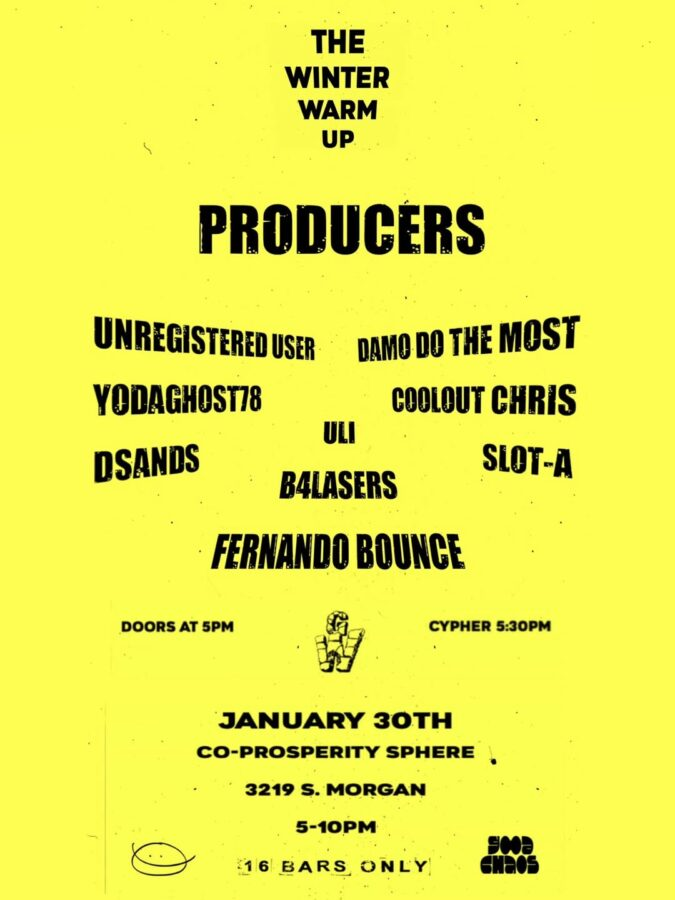

Winter Warm Up
CHICAGO – on January 30th, MURS hosts the Winter Warm Up – a free, all ages cypher at Co-Prosperity. Each rapper gets 16 bars – every 16 rappers, the beat switches, with 16 beats from some of Chicago’s best producers. Doors open at 5pm with free food from Antique Taco – cypher starts at 5:30. This event is supported by Good Chaos.